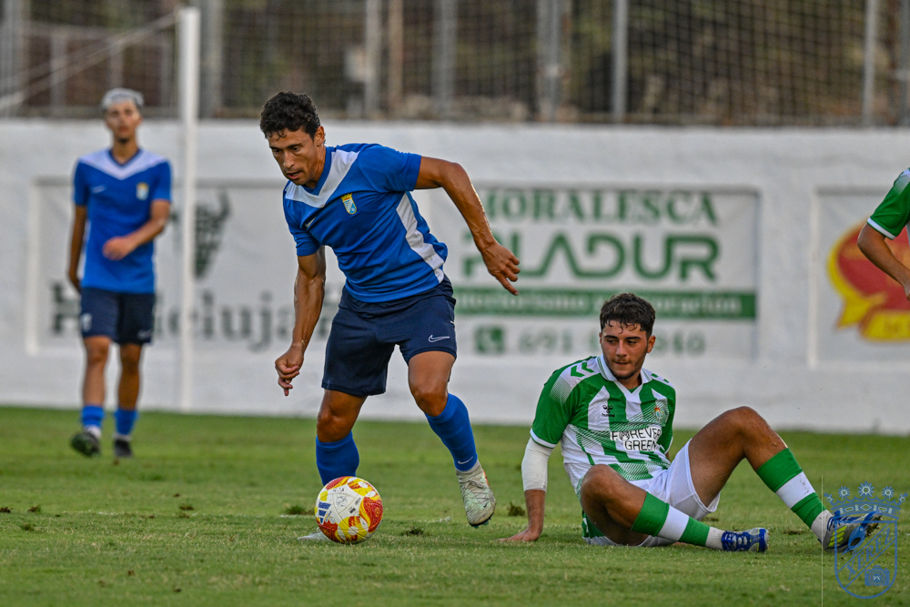

Xerez CD visit Betis Deportivo, a solid leader yet to concede a goal

Photo: PuroXerecismoThe azulinos face the verdiblanco reserve side on Saturday at 18:00, a team that has gone five matches without conceding and is the main candidate for direct promotion. A defeat would leave Abel Segovia’s side 11 points behind the leader barely a month into the season
Xerez CD face one of the toughest tests on the calendar. On Saturday at 18:00 they will visit Betis Deportivo, leaders of Group 4 of Segunda RFEF, a team that has completed its first five matches without any opponent breaching its goal.
A leader that gives nothing away
The Betis reserve side has built its start on an impenetrable defence. Five matchdays with a clean sheet make the verdiblanco squad a very hard unit to beat and the main contender to achieve direct promotion. Their solidity at the back contrasts with the goal drought the Jerez side endured in the opening matchdays.
A match with a lot at stake
The azulinos arrive at the fixture after opening their win account against Tenerife B (2-1), a result that restored confidence to a dressing room that was going through a delicate moment. With Abel Segovia now in charge of the team, Xerez know the match is worth more than three points. If Betis Deportivo win, the gap to the leader would rise to 11 points when barely a month of competition has passed, a lead that would be very hard to cut. A good result, on the other hand, would keep the azulinos’ hopes alive and confirm that the change on the bench has put the season back on track.
A huge challenge
Beating a team that has not yet conceded a goal is a complicated task. Xerez will need to be clinical in the final third and highly focused at the back. It will be the first big test to measure how far the team has come with its new coach.
🇪🇸 Leer en español ← Back to home